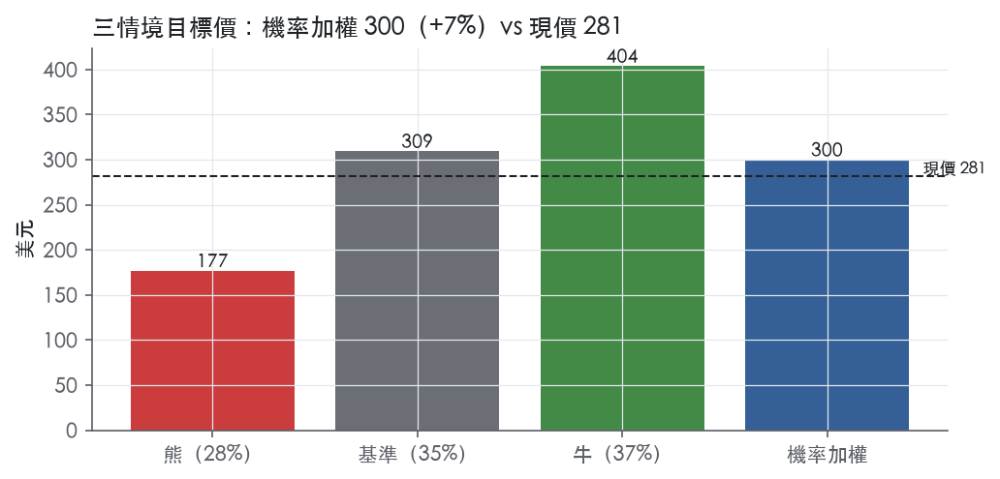
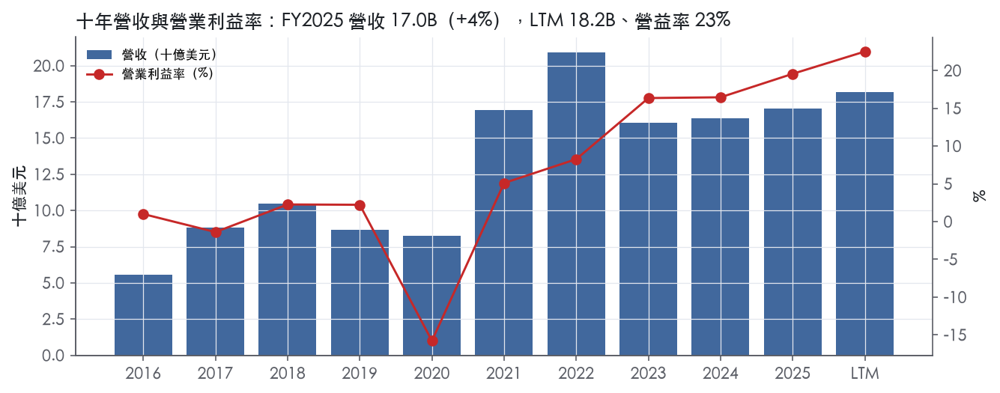
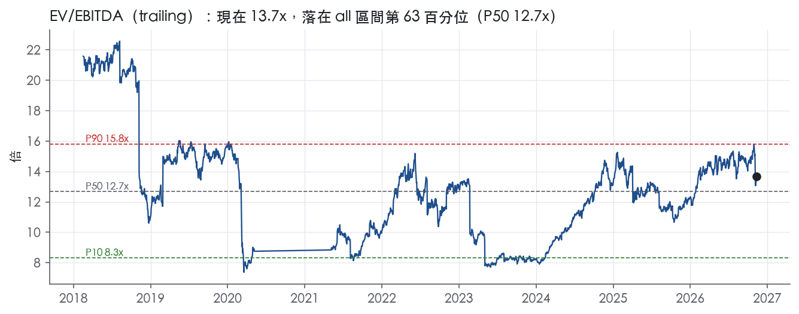
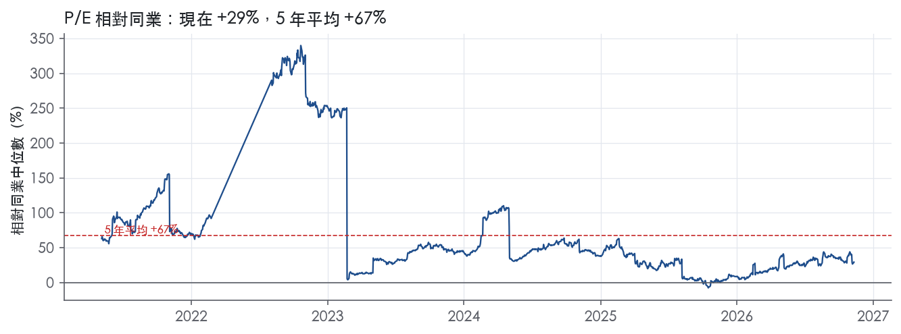
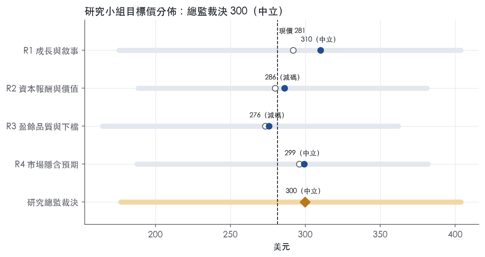
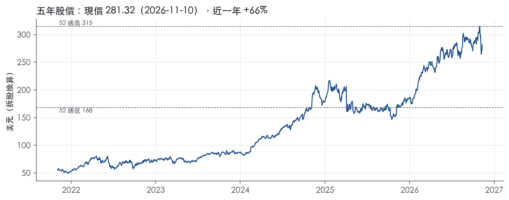

評等總表 › 能源 › TRGP
溢價已收斂，成長與槓桿相抵，中性｜評等 中立｜目標價 300
| 報告日 | 評等 | 目標價 | 當時股價 | 超額報酬 |
|---|---|---|---|---|
| 2026-11-10 | 中立 | 300 | 281 | -1.6% |
| 2026-10-30 | 賣出 | 292 | 315 | -15.5% |
| 快評 | 動作 | 結論 |
|---|---|---|
| 2026-11-05 | 維持 | 營收高於預測但淨利偏低，維持賣出 |
| 評等 | 中立 |
| 12 個月目標價 | 300 美元 |
| 現價 | 281.32 美元（2026-11-10） |
| 預期報酬 | 股價 +6.6%＋股息 1.7%＝總報酬 +8.3%；同業籃門檻 9.9%，超額 -1.6% |
| 估值方法 | EV/EBITDA 13.0x，套在未來四季的EBITDA |
| 三情境 | 熊 177／基準 309／牛 404 |
| 研究流程 | 四位研究員兩輪辯論＋研究總監裁決 |
| 資料來源 | SEC EDGAR XBRL、Tiingo、FRED（全免費） |
溢價已收斂，成長與槓桿相抵，中性（研究總監裁決，四位研究員兩輪辯論後）
評等 中立｜12 個月目標價 300 美元（總監三情境機率加權 307 與研究員中位數 293 各半）｜現價 281.32（2026-11-10）
預期報酬：股價 +6.6%＋股息 1.7%＝總報酬 +8.3%。同業籃門檻 9.9%，超額 -1.6%。
估值方法：EV/EBITDA 13.0x，套在未來四季的EBITDA。三情境：熊 177（28%）／基準 309（35%）／牛 404（37%）。
什麼會讓研究總監改變看法：2027-02 指引若成長資本支出低於 3.5B 且 FCF 覆蓋 6.00 美元股息，倍數上調到 14.3x 以上、轉偏多；Badlands 須大額退款或證券化未展延，加上 Q4 行銷利潤續降且 Permian 入口量季減，熊機率上調、轉空。
| 過去四季（實際，FY2026Q3） | 未來四季 | 第 5–8 季 | 第 9–12 季 | |
|---|---|---|---|---|
| 營收（B） | 18.2B | 20.0B | 21.6B | 23.1B |
| 營收成長 | 4.7% | 10.0% | 8.0% | 7.0% |
| 營業利益率 | 22.5% | 22.5% | 24.0% | 24.0% |
| EPS（美元） | 11.30 | 16.80 | 19.43 | 20.86 |
| EPS 成長 | 49.4% | 48.6% | 15.6% | 7.4% |
| 每股股息（美元） | 4.50 | 4.50 | 4.50 | 4.50 |
| P/E（現價） | 24.9x | 16.7x | 14.5x | 13.5x |
| 股息殖利率（現價） | 1.7% | 1.6% | 1.6% | 1.6% |
過去四季為申報數字；預測為研究總監的假設、程式計算。倍數與殖利率都用現價計算，用來看現價對應各期獲利的高低。
| 項目 | 上次（2026-11-01） | 這次（2026-11-11） | 變動 |
|---|---|---|---|
| 評等 | 賣出 | 中立 | 變動 |
| 機率加權目標價（美元） | 292 | 300 | +2.7% |
| 超額報酬 | -15.5% | -1.6% | +13.9 pp |
| 目標倍數 | 13.7x | 13.0x | — |
| 未來四季營收成長 | 3.5% | 10.0% | +6.5 pp |
| 未來四季營益率 | 23.0% | 22.5% | -0.5 pp |
| 未來四季 EPS（美元） | 14.48 | 16.80 | +16.0% |
| 熊／基準／牛機率 | 32／31／37 | 28／35／37 | — |
程式計算；「未來四季」各自從當次報告的資料起點算。研究總監逐點說明見第八章「與上次報告比較」。
| 情境 | 機率（歷史） | 故事 | 未來四季營收成長 | 第 5–8 季營益率 | 倍數 | 目標價 | 股價漲跌 |
|---|---|---|---|---|---|---|---|
| 熊 | 28%（27%） | WTI 72 加 Waha 負價使 Permian 放緩、行銷利潤續降、新產能低稼動而資本支出已承諾，溢價翻回歷史折價；對應風險表第 2、4 條，第 1 條放大，第 3 條 Badlands 退款與證券化未展延為觸發點 | -5.0% | 19.0% | 11.0x | 177 | -37.1% |
| 基準 | 35%（35%） | 收費量能帶動 EBITDA 成長、行銷利潤停在 Q3 低檔、WTI 88 壓轉嫁營收、淨負債續升，溢價回到 1 年平均 | 10.0% | 24.0% | 13.0x | 309 | 9.9% |
| 牛 | 37%（38%） | WTI 95 路徑、行銷利潤回到上半年水準、Yeti 再提前與 ExxonMobil 新廠加速，倍數回到自家 5 年 P90、溢價回到 24% 附近 | 13.0% | 26.5% | 14.5x | 404 | 43.5% |
目標價由程式依研究總監的驅動與倍數計算；機率由研究總監給定。括號內是歷史頻率：把這檔股票過去十年 12 個月報酬的波動形狀，置中在基準情境，結果落在各情境附近的比例。

四位研究員用不同方法各自估值，回應研究總監的質疑後交出第二輪，最後由總監逐點裁決。各研究員的主張見第七章，裁決理由見第八章，完整論證見《研究底稿》。
| 立場（一輪→二輪） | 加權目標價（一輪→二輪） | 評等（一輪→二輪） | 第二輪倍數 | 熊～牛目標價 | |
|---|---|---|---|---|---|
| R1 成長與敘事 | 中性→中性 | 292→310 | 中立→中立 | 13.0x | 176～404 |
| R2 資本報酬與價值 | 看空→看空 | 280→286 | 減碼→減碼 | 12.6x | 188～381 |
| R3 盈餘品質與下檔 | 中性→看空 | 273→276 | 減碼→減碼 | 13.0x | 165～362 |
| R4 市場隱含預期 | 看空→中性 | 296→299 | 中立→中立 | 13.3x | 188～382 |
| 研究總監裁決 | 中性 | 300 | 中立 | 13.0x | 177～404 |
目標價由程式依各自的驅動與倍數計算；評等＝機率加權總報酬 − 同業籃門檻。
Targa Resources是一家中游能源基礎設施公司，核心業務是天然氣與NGL（天然氣液）的採集、處理、運輸、分餾與出口。公司主要客戶是上游天然氣與原油生產商，特別集中在Permian盆地，透過percent-of-proceeds與fee-based合約收取處理與服務費。2025與2024年度，單一客戶占合併營收均未達10%，顯示客戶集中度不算極端¹。
公司分為兩大報導分部：Gathering and Processing（G&P）與Logistics and Transportation（L&T），外加一個涵蓋商品衍生品mark-to-market損益的「Other」項目¹。L&T分部2025年調整後營業利潤（adjusted operating margin）為3,182.0M美元，較2024年2,717.4M美元成長17%，主要受NGL管線運輸量、分餾量與行銷利潤率提升驅動¹。G&P分部2025年adjusted operating margin成長主要因Permian天然氣入口量增加，受惠於Roadrunner II、Greenwood II、Bull Moose、Pembrook II、Bull Moose II等多座新廠相繼投產¹。「Other」項目2025年營業利潤為虧損5.3M美元，較2024年虧損164.6M美元大幅收斂，主要反映未指定為現金流量避險的衍生品盯市損益變動¹。兩大分部各自占總營收比重，10-K未揭露明確百分比。
資產與業務高度集中於Permian盆地（Midland與Delaware兩個子盆地）與墨西哥灣沿岸Mont Belvieu、Galena Park等NGL分餾與出口樞紐。出口量（export volumes）代表Galena Park Marine Terminal交付給國際市場客戶的NGL產品數量，2025年為429.1 MBbl/d，較2024年423.6 MBbl/d成長1%¹。公司新聞稿提及2026年8月與ExxonMobil子公司簽署20年期、fee-based整合中游協議，涵蓋Permian盆地天然氣採集處理與下游服務，顯示公司持續深化與大型上游生產商的長期通路綁定²。銷售通路包括商品直銷（sales of commodities）與中游服務收費（fees from midstream services）兩大類，2026Q3兩者分別為4,722.9M美元與875.7M美元³。
2025Q4營收4.06B美元，年減7.9%（is/cf.revenue相關資料包，FY2025Q4），EBITDA為1.31B美元，營益率22.6%【判，依資料包】。2026Q1營收4.09B美元，年減10.2%，EBITDA 1.27B美元，自由現金流為負0.16B美元【判，依資料包】。2026Q2為創紀錄的一季：調整後EBITDA達1,603.1M美元，較2025年同期成長38%，較2026Q1成長14%，主因L&T分部行銷利潤率提升及G&P分部Permian量創紀錄²；公司並將2026全年adjusted EBITDA指引上修至57-59億美元區間上緣²。2026Q3營收5,598.6M美元，年增35%，adjusted EBITDA為1,504.3M美元，年增18%，但季減6%，主因L&T行銷利潤率與LPG出口利潤率下滑抵銷了G&P與NGL運輸分餾量的紀錄表現³；公司將2026全年adjusted EBITDA指引進一步上修至至少6.0B美元，並預告2027年普通股股息將較2026年增加20%至每股6.00美元年化³。
公司表示其成長引擎來自Permian盆地天然氣入口量的結構性成長，疊加新建處理廠（Copperhead、Yeti、Yeti II、Roadrunner III、Wrangler、Ranger、Ranger II等）與L&T下游資產擴充（Train 12、Train 13、Train 14分餾塔、Speedway NGL管線、GPMT LPG出口擴建）的持續投產³。公司強調與ExxonMobil簽署的20年期、fee-based整合中游協議，以及因應生產商需求增加而訂購Permian Midland與Delaware新廠長周期物料的決策，顯示其以長約鎖定量能、以fee-based結構降低商品價格波動曝險為核心策略³。公司並表示2026年淨成長資本支出約5.0B美元，2027年起預期能持續提供「有意義的」年度股息增幅³。
整體看，Targa的成長敘事高度綁定Permian量能擴張與對應的中下游基礎設施垂直整合，fee-based合約占比提升正在結構性降低商品價格波動對利潤率的衝擊。但高成長資本支出（年化約5.0B美元）與總負債規模（2026Q3約19.8B美元，8-K揭露）意味著槓桿與利率敏感度仍是觀察重點。股息連續大幅調升（2026年追蹤年化5.00美元、預告2027年6.00美元）顯示管理層對現金流可持續性有相當信心，但也壓縮了財務彈性。

Targa 的護城河評為窄，趨勢穩定。我們有把握未來 5 年以上 ROIC 仍高於資本成本，但沒有把握撐過 10 年。原因有三：十年平均 ROIC 低於資本成本，利潤仍部分連動商品價格，資本密度又高。優勢來自盆地內的實體資產布局與上下游整合，不來自品牌、專利或網路效應。
優勢來自效率規模與成本優勢兩類，無形資產與網路效應找不到證據，不列入。
效率規模
成本優勢（垂直整合帶來的稼動率）
數字只部分支持護城河，十年平均跟我們的主張衝突，近四年則支持「窄」。
衝突的部分
支持的部分
為什麼維持「窄」而不下修為「無」
為什麼不上修為「寬」
最大的侵蝕來源是商品價格曝險與資本密度，其次是盆地集中度。
商品價格曝險
資本密度與槓桿
盆地集中與競爭建設
客戶議價力
目標 EV/EBITDA 倍數應相對同業持平，不給溢價。理由是護城河為窄，近四年 ROIC 高於資本成本可以支撐 5 年期的超額報酬假設，但十年平均仍低於資本成本，終值期不該假設超額報酬永續。現在 EV/EBITDA 13.7x 已在五年 76.8% 分位，接近 5y P90 的 14.5x；估值研究員不宜再用歷史高分位外推，應讓超額報酬在 5 至 10 年間收斂到資本成本。
| 指標 | 最新 | 十年平均 | 標準差 | 最低 | 最高 |
|---|---|---|---|---|---|
| ROIC | 14.7% | 6.6% | 8.4% | -9.7% | 15.2% |
| 毛利率 | 38.3% | 28.6% | 7.2% | 19.0% | 38.3% |
| 營業利益率 | 19.6% | 5.4% | 9.9% | -15.8% | 19.6% |
| FCF 利潤率 | 3.4% | 0.3% | 9.9% | -18.8% | 10.6% |
| ROE | 67.9% | 19.7% | 33.9% | -41.0% | 67.9% |
程式計算。資本成本代理值（10 年債＋5%）：9.9%；ROIC 平均減資本成本：-3.2%；ROIC 有資料的 9 年中，高於資本成本 4 年。
Targa 的盈餘有營業現金流撐著（CFO／淨利 LTM 2.06x，近三年 2.40x），應計比率連續三期為負值（LTM -9.0%、近三年 -9.5%），代表淨利沒有靠應計項目灌水。但自由現金流／淨利持續低於門檻（LTM 0.38x，近三年 0.48x），且淨負債／EBITDA 已達 3.29x，超過紅燈門檻，這兩個問題同源：公司正在用舉債支撐一輪大型成長資本支出。SBC 占營收僅 0.4%，不是侵蝕盈餘的因素。整體評級打在「中」，因為紅燈都能用成長資本支出與行業特性解釋，但槓桿方向沒有在收斂，估值不能完全無視。
GAAP 層面現金轉換是夠的：LTM CFO／淨利 2.06x、近三年平均 2.40x，都遠高於 1.00x 的綠燈門檻。但自由現金流被成長資本支出吃掉，LTM FCF／淨利僅 0.38x，近三年平均 0.48x，雙雙落在紅燈區。10-K 的調整後自由現金流結構直接解釋了原因：FY2025 成長資本支出淨額 3,343.5M，遠高於維護資本支出淨額 226.4M⁴，調整後自由現金流從 FY2024 的 140.1M 跳升到 FY2025 的 539.0M，成長 285%⁴，顯示現金流本身在改善，只是被持續擴產的資本支出壓低了淨自由現金流對淨利的比率。十年平均的 FCF／淨利出現 -120.6x 的極端值，這是分母（淨利）在 FY2016-FY2020 多年接近零或虧損造成的統計失真，不是營運現金流品質問題。應收帳款成長比營收成長慢 12.8 個百分點（FY2025），顯示收款沒有拖累現金轉換。
公司非 GAAP 調整後 EBITDA 的主要加回項目包括：利息淨額 852.8M、所得稅費用 529.7M、折舊攤銷 1,515.3M、股權獎酬補償 69.5M、風險管理活動（未實現避險損益）5.3M、少數股權調整 11.4M、訴訟與環境準備金 18.6M、資產減損 18.8M⁴。其中資產減損 18.8M 與訴訟環境準備金 18.6M 公司定義為非經常性且非核心營運⁴，金額相對 EBITDA（4,957.4M，抄同上）占比很小，可以接受排除。股權獎酬補償 69.5M 雖是非現金項目，但代表真實的股東稀釋成本，本系統計分表不加回、直接看 SBC／營收 0.4%（量化底稁），顯示即使全額計入對盈餘影響也極小。風險管理活動的未實現避險損益屬於商品避險的公平價值波動，排除合理，因為它不反映實際收付現金。整體而言，非 GAAP 調整規模不大、方向保守，沒有看到用非經常性項目系統性灌水 EBITDA 的痕跡。
槓桿是這份報表最大的體質問題：截至 2026 年 9 月 30 日總合併債務為 19.8B，其中 17.9B 為優先無擔保票據、860M 商業票據、451M 應收帳款證券化融資、796M 融資租賃負債³，合併流動性約 2.9B（含 2.6B 循環信用額度可用、149M 證券化額度、143M 現金）³。公司同時持續加碼資本支出：2026 年淨成長資本支出估計約 5.0B、淨維護資本支出約 250M 不變³，並宣布追加 Train 14 分餾廠及三座新處理廠的長交期物料訂購³，顯示舉債擴產是既定策略而非一次性。股東回饋同時在加碼：第三季度宣布季度股息每股 1.25 美元（年化 5.00 美元），較去年同期增加 25%³，並預計 2027 年將普通股股息提高到每股 6.00 美元，較 2026 年增加 20%³；第三季度回購 180,768 股，均價 287.64 美元，淨成本 52M，回購額度剩餘 1,187M³。稀釋股數年變動 LTM 為 0.0%、近三年平均 -2.1%，顯示公司在小幅淨回購、沒有用股票稀釋盈餘。整體資本配置是「舉債擴產＋同步加碼股息」的組合，這種模式在 EBITDA 成長期可以撑槓桿比率不惡化，但一旦成長放緩，淨負債／EBITDA 的紅燈會變成真正的信用風險。
自由現金流／淨利紅燈（LTM 0.38x，近三年 0.48x）：真實但是成長資本支出造成，不是盈餘品質造假。FY2025 成長資本支出 3,343.5M 遠大於維護資本支出 226.4M⁴，且調整後自由現金流年成長 285%⁴，顯示底層現金流在改善，只是分配到擴產而非留存為自由現金流。判定：可解釋，非真正的盈餘品質缺陷。
淨負債／EBITDA 紅燈（LTM 3.29x，近三年 3.27x）：真問題。總合併債務 19.8B³隨著持續的成長資本支出（2026 年預估 5.0B）³逐年墊高，且公司同時加碼股息（2027 年股息再增 20%）³，槓桿沒有收斂的跡象。判定：真實且持續的結構性槓桿，限制估值倍數上緣。
存貨成長比營收快 24.5 個百分點（FY2025）：無法在提供的 10-K MD&A 節錄中找到針對存貨變動的具體解釋。FY2025 商品銷售因天然氣價格上漲（766.2M）及 NGL/天然氣銷量增加（518.7M）推升⁴，若存貨以當期較高商品價格計價，账面存貨金額可能因價格上漲而膨脹，但這是推測，原文沒有直接佐證。判定：未完全解釋，列為觀察項，非立即的現金風險（應收帳款成長反而比營收慢 12.8pp），但提醒估值研究員留意下一季存貨周轉是否惡化。
淨利率 FY2019→FY2020 跳動 -16 個百分點：本次資料包沒有提供 FY2020 年度的 10-K MD&A 節錄，無法直接引用原文佐證。FY2020 EBITDA 轉為負值（-0.44B，資料包年度表），對應期間為全球能源需求受疫情衝擊、商品價格重挫的年份，推測與資產減損或商品避險損失有關，但缺乏原文依據，列為資料缺口。判定：高度可能是宏觀與一次性減損共同造成，但在無法引用原文的前提下不應完全排除為結構性問題，建議估值研究員另行查閱 FY2020 10-K 確認。
淨利率 FY2020→FY2021 跳動 +19 個百分點：與上一條同源，是從 FY2020 低基期的反彈，資料包顯示 FY2021 營收成長 105.2%（資料包年度表），符合疫後需求與商品價格復甦的敘事。判定：基期效應，非盈餘品質問題，但同樣缺乏原文直接佐證。
估值應該以調整後 EBITDA／調整後自由現金流為主要定錯基準，因為非 GAAP 調整項目規模小、方向合理，沒有系統性灌水跡象；但在算隱含股權價值時，應計入全額利息與維護資本支出的真實現金負擔，不要單用 EBITDA 倍數忽略槓桿。淨負債／EBITDA 3.29x 的紅燈應該直接限制 EV/EBITDA 的目標倍數上緣，不建議給到歷史分位 90% 以上的估值（目前 EV/Sales 已在五年分位 90.0%），因為槓桿方向沒有收斂空間支撐溢價擴張。盈餘不需要大幅打折，但自由現金流應打折反映持續的擴產支出，直到成長資本支出週期進入尾聲（Yeti、Yeti II 等計畫預計 2027 年投產³）才可以放寬倍數假設。
| 項目 | LTM | 近三年 | 十年 | 燈號 | 規則 |
|---|---|---|---|---|---|
| 營業現金流／淨利 | 2.06x | 2.40x | 76.2x | 綠 | ≥1.00x 綠、<0.80x 紅 |
| 自由現金流／淨利 | 0.38x | 0.48x | -120.6x | 紅 | ≥0.90x 綠、<0.60x 紅 |
| 應計比率（(淨利−CFO)／平均總資產） | -9.0% | -9.5% | -10.1% | 綠 | ≤0.0% 綠、>5.0% 紅 |
| SBC／營收 | 0.4% | 0.4% | 0.5% | 綠 | ≤3.0% 綠、>8.0% 紅 |
| 淨負債／EBITDA | 3.29x | 3.27x | 2.57x | 紅 | ≤1.50x 綠、>3.00x 紅 |
| 利息保障倍數（營業利益／利息） | — | — | — | — | ≥8.00x 綠、<3.00x 紅 |
| 稀釋股數年變動 | 0.0% | -2.1% | 4.4% | 綠 | ≤0.0% 綠、>3.0% 紅 |
| （股利＋回購）／淨利 | — | — | — | — | ≥50.0% 綠、<0.0% 紅 |
| 應收帳款成長 − 營收成長（FY2025） | -12.8pp | — | — | 綠 | ≤5pp 綠、>15pp 紅 |
| 存貨成長 − 營收成長（FY2025） | +24.5pp | — | — | 紅 | ≤5pp 綠、>15pp 紅 |
程式計算；燈號以 LTM（無則近三年平均）判定。
| 風險 | 觸發指標（看什麼數字、在哪裡看） | 對 EPS 的影響方向與粗略幅度 | 未來 12 個月發生機率（高／中／低） | 出處 |
|---|---|---|---|---|
| 槓桿擴張＋利率敏感度：總負債19.8B美元、年化5.0B成長資本支出，多為舉債融資 | 每季8-K揭露的「total consolidated debt」、Commercial Paper Program餘額；10年期美債殖利率（目前4.88%） | 負向，大：利率每升、再融資利差擴大，直接壓縮淨利息費用，中期侵蝕EPS | 中 | 8-K 財報新聞稿（2026-11-05） |
| 商品價格與行銷/出口利潤率波動：percent-of-proceeds與LPG出口利潤率受NGL/天然氣現貨價影響 | 每季財報的「marketing margin」「LPG export margin」變動方向（Q3已季減因此兩項轉弱）；NYMEX天然氣/NGL價格 | 負向，中～大：2026Q3 EBITDA季減6%已反映此風險兌現 | 高 | 8-K 財報新聞稿（2026-11-05） |
| FERC費率監管不確定性：Targa Badlands等資產的common carrier豁免被撤銷、費率仍在聽證中 | FERC Docket IS26-24-000後續裁決日期、是否要求退款（subject to refund） | 負向，中：若最終費率遭下調或需退款，直接沖減該資產現金流 | 中 | 10-K 年報 FY2025 Item 1A（風險因素） |
| 大型成長資本支出執行風險：多座新廠（Yeti、Wrangler、Ranger、Train 13/14、Speedway等）同時在建，需求與時程假設若落空 | 每季「Growth Projects Update」中新廠投產時程是否延遲；年度net growth capex是否超出5.0B美元指引 | 負向，大：若Permian產量成長不如預期，新增產能閒置將拖累ROIC與折舊負擔 | 中 | 8-K 財報新聞稿（2026-11-05） |
| 股息大幅連續調升（2027年達6.00美元/股，年增20%）壓縮財務彈性 | 每季董事會股息宣告金額；FCF殖利率（目前僅1.5%）與股息率（1.7%）之間的缺口 | 負向，中：FCF（LTM 0.93B）遠不足覆蓋股息與回購，缺口需靠舉債或股權融資填補，稀釋風險或利息負擔上升 | 高 | 8-K 財報新聞稿（2026-11-05） |
槓桿與利率風險排第一，因為19.8B美元的總負債（2026Q3）已是淨負債19.14B美元的主要構成，且公司明確表示2026年淨成長資本支出約5.0B美元仍在持續³。這代表槓桿不是一次性事件，而是結構性、每年都在加碼。10年期美債殖利率已回到4.88%（2026-11-09）【判，依總經數據】，若長端利率進一步上升，公司新發行的高票息長債（如6.125% 2055年到期票券）會持續墊高利息費用¹，直接吃掉EPS成長。
商品價格與行銷/出口利潤率波動是公司自己在最新一季財報中承認的近因：2026Q3調整後EBITDA季減6%，原因是「lower marketing margin and lower LPG export margin」抵銷了G&P與L&T的量能紀錄³。這條風險之所以排第二且機率定為「高」，是因為它已經在最近一季實際發生，不是假設性風險，且NGL與LPG出口利潤率天生跟著國際價差與供需波動，公司無法完全用fee-based合約鎖住。
FERC監管風險聚焦在Targa Badlands的common carrier豁免爭議：行政法官已裁定該資產不再符合豁免資格，FERC於2025年8月維持原判，Targa Badlands已於2025年10月提交初始費率表，目前處於「subject to refund」的聽證程序中，託運方正挑戰費率合理性，公司明確表示「無法預測這些挑戰的最終結果」⁵。這條風險的不確定性在於裁決時點與退款金額都不可控，但影響範圍限於Badlands單一資產群，整體盈餘衝擊預估為中等。
成長資本支出執行風險來自公司本身密集的在建專案清單：Copperhead在試車、Yeti/Yeti II提前至2027年Q2/Q3、Roadrunner III、Wrangler、Ranger、Ranger II仍在施工，另外還有Train 13、Train 14分餾塔與Speedway管線³。多專案同時推進意味著任一延遲或需求不如預期（例如Permian鑽井活動放緩）都會造成資本密集但產能利用率偏低的狀況，10-K本身也點名「我們無法及時取得必要許可證」是已知風險之一¹。
股息風險的核心矛盾在於：trailing FCF殖利率僅1.5%，但公司已宣布2027年股息將年增20%至6.00美元/股³，LTM自由現金流僅0.93B美元，遠低於股息加回購的現金需求。這個缺口過去靠舉債與商業票據計畫填補（2026Q3商業票據餘額860M美元）³，若資本市場轉冷或信用利差擴大（目前hy_oas 3.34），再融資成本上升會直接侵蝕可分配現金流，機率定為「高」是因為這個缺口已經存在、不是假設。
客戶集中於ExxonMobil類超大型生產商的議價力風險：公司2026年8月與ExxonMobil子公司簽署20年期fee-based整合協議³，雖然單一客戶占營收未達10%¹，但新建Wrangler、Ranger、Ranger II等多座處理廠直接綁定這筆單一合約，若未來合約條款重議或ExxonMobil產量規劃調整，資本已投入但合約條件改變的曝險未見公司量化揭露。
股票估值已站在歷史高分位但公司未警示：EV/Sales現值4.4x對應5年分位90.0%、EV/EBITDA分位76.8%（量化底稿band資料），顯示市場已為成長故事定價甚高，任何執行瑕疵（上述任一風險兌現）都可能觸發倍數壓縮，而這屬於市場估值風險，10-K的Risk Factors通常不會討論自家股票的估值位置。
現價 281.32 對應 trailing（過去四季）P/E 24.9x、EV/EBITDA 13.6x、EV/EBITA 17.7x、EV/Sales 4.4x、FCF 殖利率 1.5%。主要估值倍數 EV/EBITDA 現在 13.7x，落在all區間第 63 百分位（P10／P50／P90 = 8.3x／12.7x／15.8x）。

把程式的機械基準預測放到現價下，市場付的前瞻倍數是：EV/EBITDA（未來四季） 16.1x、P/E（未來四季） 24.3x、EV/EBITDA（第 5–8 季） 20.2x、P/E（第 5–8 季） 37.4x。反推 DCF 顯示市價隱含未來五年營收年成長 150.0%（WACC 9.0%、終值成長 3.0%、FCF 利潤率 -10.2%，SBC 不加回）。
| 倍數 | 現在 | all P10 | all P50 | all P90 | 現在分位 | 全期 P50 |
|---|---|---|---|---|---|---|
| P/E | 24.9x | 22.1x | 30.2x | 71.9x | 26.9% | 30.2x |
| EV/EBITDA | 13.7x | 8.3x | 12.7x | 15.8x | 63.0% | 12.7x |
| EV/EBITA | 17.8x | 11.4x | 18.8x | 53.5x | 43.2% | 18.8x |
| EV/EBIT | 19.5x | 13.0x | 20.9x | 123.8x | 38.6% | 20.9x |
| EV/Sales | 4.4x | 1.3x | 1.7x | 3.6x | 94.3% | 1.7x |
| P/S | 3.3x | 0.7x | 1.1x | 2.7x | 94.5% | 1.1x |
| P/FCF | 64.8x | 8.2x | 26.5x | 90.9x | 68.9% | 26.5x |
trailing 倍數（股價 ÷ 過去四季）；分位以每個交易日計算。
同業籃：OKE, WMB, KMI, ET, EPD（手動名單（playbooks/peers.yaml））。評等門檻 9.9%：同業「倍數不變下持有一年」的隱含報酬中位數（＝ FCF 殖利率 ×(1＋g)＋g，g 為 5 年營收年複合成長並夾在 −2%～8%），每家夾在 0～15%、P/E 低於 5 倍視為資料可疑而排除，中位數再限制在 10 年債到 10 年債＋5% 之間（同業原始中位數 12.7%）；排除：ET（隱含報酬算不出來）。
| 代號 | 市值 | 5 年營收 CAGR | 營益率 | ROIC | P/E | 5 年 P/E 中位數 | EV/EBITDA | P/FCF | 隱含報酬 |
|---|---|---|---|---|---|---|---|---|---|
| TRGP | 60.3B | 15.6% | 22.5% | 14.7% | 24.9x | 28.0x | 13.6x | 64.6x | 9.7% |
| OKE | 55.1B | 31.5% | 14.2% | 8.5% | 13.5x | 16.3x | 10.9x | 21.8x | 13.0% |
| WMB | 82.6B | 9.1% | 38.2% | 7.9% | 26.9x | 25.5x | 16.2x | — | 12.0% |
| KMI | 69.5B | 7.7% | 29.0% | 6.0% | 19.3x | 20.7x | 13.0x | 22.5x | 12.5% |
| ET | — | 17.0% | 9.2% | 7.6% | — | — | — | — | — |
| EPD | 81.0B | 14.1% | 12.7% | — | — | — | 10.8x | 16.8x | 14.4% |
| 同業中位數 | 14.1% | 14.2% | 7.7% | 19.3x | 20.7x | 11.9x | 21.8x | 9.9% |
全部 trailing，程式以各公司 SEC XBRL 與 Tiingo 行情計算；第一列為本檔。
P/E 相對同業中位數：現在 29.1%，過去 1 年平均 22.4%、3 年 35.8%、5 年 67.0%；EV/EBITDA 相對同業中位數：現在 14.5%，過去 1 年平均 8.8%、3 年 -3.7%、5 年 -6.3%。

程式的機械基準（成長率從過去四季年增率三年收斂到 6%、利潤率持平）用 EV/EBITDA all P50（trailing） 估值得到 142（-49.5%），用現行倍數得到 160。這兩個數字只是參考點，不是本報告的目標價；研究員對這個定價的回應在第七章。
下表是每位研究員第一輪（各自獨立）與第二輪（回應研究總監的質疑後）的結果。目標價全由程式依各自的假設計算。
| 立場（一輪→二輪） | 加權目標價（一輪→二輪） | 評等（一輪→二輪） | 第二輪倍數 | 熊～牛目標價 | |
|---|---|---|---|---|---|
| R1 成長與敘事 | 中性→中性 | 292→310 | 中立→中立 | 13.0x | 176～404 |
| R2 資本報酬與價值 | 看空→看空 | 280→286 | 減碼→減碼 | 12.6x | 188～381 |
| R3 盈餘品質與下檔 | 中性→看空 | 273→276 | 減碼→減碼 | 13.0x | 165～362 |
| R4 市場隱含預期 | 看空→中性 | 296→299 | 中立→中立 | 13.3x | 188～382 |
| 研究總監裁決 | 中性 | 300 | 中立 | 13.0x | 177～404 |
目標價由程式依各自的驅動與倍數計算；評等＝機率加權總報酬 − 同業籃門檻。
分歧度：第一輪 加權目標價 273～296（區間＝現價的 8%）· 倍數 12.7～13x · 立場 中性×2、看空×2；第二輪 加權目標價 276～310（區間＝現價的 12%）· 倍數 12.6～13.3x · 立場 中性×2、看空×2。

| 研究員 | 第二輪主張 | 堅持的理由 |
|---|---|---|
| R1 成長與敘事 | 中性，13.0x：收費量能撐起 EBITDA 雙位數成長，但現價已反映。 | 營益率該高於過去一年的 22.5%，收費收入占比上升會墊高利潤率。 |
| R2 資本報酬與價值 | 偏空，12.6x：資本報酬改善是真的，但現價已先付了錢。 | 資本支出加重、股息高於自由現金流，倍數只給過去三年中位數。 |
| R3 盈餘品質與下檔 | 看淡，13.0x：盈餘可信，但相對同業溢價已在歷史頂端。 | 熊情境倍數壓到 10.5x，低於同業最低的 10.8x。 |
| R4 市場隱含預期 | 中性，13.3x：行銷利潤回落已反映在股價，報酬不及門檻。 | 市場低估資本支出期，成長資本支出要延續到 2029 年。 |
每位研究員的逐條回應與完整論證見《研究底稿》（TRGP_研究底稿_2026-11-11.docx）。
| 分歧點 | R1 | R2 | R3 | R4 | 什麼資料會分出勝負 |
|---|---|---|---|---|---|
| NTM 營收成長 | 9% | 10% | 6% | 6% | 2027-02 的 Q4 財報：營收能否守在 5B 以上、fees 年增是否維持兩成 |
| 營益率 y1／y2 | 23.5／25% | 22／23% | 21.5／22% | 23.5／24% | Q4 行銷與 LPG 出口利潤是否止跌；2027Q2 Yeti 投產後單季 adj EBITDA |
| 目標倍數（ebitda、ntm） | 13.0x | 12.6x | 13.0x | 13.3x | 2027-02 的 2027 成長資本支出指引與槓桿路徑；相對同業溢價是否回到 1 年平均 |
| 熊情境倍數與牛／熊機率 | 11.0x；37／28% | 11.0x；33／32% | 10.5x；33／28% | 11.0x；36／30% | Badlands（IS26-24-000）裁決、證券化 2027-07-30 展延、WTI 是否走 72 路徑 |
一、NTM 營收：採 R2 的 10%。 Q3 單季營收 5.60B高於 LTM 內另外三季（4.06B、4.09B、4.44B；／FY2026Q1／FY2026Q2），NTM 會把最低的兩季移出。服務費 Q3 年增 29%、前九月年增 25%³是量能驅動，Train 12 與 Bull Run Extension 已投產、Copperhead 試車、Yeti／Yeti II 提前到 2027Q2／Q3³。R3／R4 的 6% 等於假設營收從 Q3 大幅季減：R2 的橋樑指出，這要商品銷售（Q3 4,722.9M，年增 36%）跌幅超過本行 WTI 97→88 且量能不增，與紀錄量能衝突；R4 說「沒有新證據要求更動營收」，但 Q3 本身就是新證據。不採更高（Q3 年化）：Q3 的 G&P 受惠「higher natural gas and NGL prices」³，WTI 88 路徑會把這段轉嫁營收壓回去。
二、營益率：own，22.5%／24%／24%。 四人都拒絕機械模型回歸十年中位數 3.7%，我同意：FY2016–2022 是 POP 合約與建設期，營益率最高只有 8.3%、FY2020 為 -15.8%，劇本自己也註明通用模型缺商品價格驅動；商品價格的正常化改由三情境的 WTI 路徑處理。NTM 停在 LTM 的 22.5%（同業表）。不跟 R1／R4 的 23.5%：Q3 已跌到 19.6%，商品銷售放大會稀釋百分比，WTI 97→88 會拿掉 Q3 的價格順風，管理層說行銷利潤「fewer optimization opportunities」、LPG 出口「lower volumes and fees」，D&A 年增 20% 快過營收³。不跟 R2／R3 的 22%／21.5%：Q3 是行銷與出口利潤同時落底的一季，2026 全年 adj EBITDA 指引仍上修到至少 6.0B³，而預測紀錄顯示 R2、R3 的營業利益系統性偏低（-4.5%、-3.0%），R4 最準（+0.9%），我自己也偏低（-2.1%），所以往 R4 那側修正、但止於 LTM。y2 上到 24%：Yeti／Yeti II 補進收費量能，WTI 88 縮小轉嫁營收的分母，仍低於含行銷高峰的 Q2 27.8%。
三、目標倍數：採 R3 的 13.0x。 位置在自家 trailing 3 年 P50 12.6x與現值 13.7x 之間，相對同業中位數 11.9x 的溢價落在過去 1 年平均 8.8% 附近（同業表）。低於持平 13.7x 的理由全是個股因素：淨負債／EBITDA 3.29x、FCF／淨利 0.38x（財務體質章）；2027 股息再增 20% 到 6.00 美元，而 FCF 殖利率 1.5% 已低於股息率 1.7%（快照）；資本支出約 5.0B 一年，新廠排到 2028–29、Train 14 到 2029Q1³；商業本票 860M 與證券化 451M 是短天期融資，證券化 2027-07-30 到期³,²；Badlands 處於 subject to refund⁵；護城河窄、不給溢價擴張，而現在 14.5% 已是所有窗口的最高點（3 年 -3.7%、5 年 -6.3%）。不採 R2 的 12.6x：3 年窗口涵蓋 FY2023–24，EBITDA 3.96B→4.12B（年度表）幾乎沒成長，現在是 2026 指引至少 6.0B 對 FY2025 調整後 4,957.4M⁴，且 ROIC 14.7%是同業中位數 7.7% 的近兩倍；R2 只罰資本密度、不計它換來的成長，和他的營業利益偏低紀錄同方向。不採 R4 的 13.3x：保留一部分現行溢價的理由只有「介於兩者之間」，且「同業籃未移動」與兩份程式同業表不符——11-01 報告時同業中位數 12.7x，現在 11.9x，類股自己也在下修；溢價錨該取 1 年平均，不是現值與平均的中間。沒有人用利率壓倍數，R2 的 V4 已刪除。
四、熊情境與機率：own。 熊的營運驅動取 R3（WTI 72、Waha 負價、行銷利潤續降、新產能低稼動、資本支出 27%——工程已承諾不會立刻停），倍數由 10.5x 微調為 11.0x：11.0x 低於同業中位數 11.9x，折價幅度與 5 年平均 -6.3% 同量級，等於溢價翻回歷史折價；10.5x 低於同業最低的 EPD 10.8x、OKE 10.9x，要再疊一層類股下修。機率 37／35／28：程式對 R1、R3 相近距離的歷史對照是 39／36／26 與 38／34／28，我的三個數字都在 ±3 個百分點內。公司特有的左尾（槓桿、證券化到期、Badlands、本行衰退機率 25%）與右尾壓縮（溢價在頂端、行銷利潤集中上半年）互相抵消，所以不偏離歷史。不採 R2 的 33／32：他的熊只有 -34% 卻給 32%，牛熊幾乎對稱，與置中分布的右偏不符；不採 R3 的 33% 牛：「溢價已到頂」已在 13.0x 的基準倍數裡扣過，不能再壓右尾。這是本部 22 份報告熊高於牛慣例的修正。
漂移與總經偏離。 沒有退回的漂移。R2 向中位數靠攏 52%，但來源是我轉發的 Q3 營收與 fees（他原本看不到），營收還從最低變成最高，是證據修正不是靠攏；R1 反向移動，R3、R4 的變動都附理由。四人的 macro_deviations 都是空，接受：基準 WTI 88；牛取本行下行情境的 WTI 95（該路徑利差擴到 2.30 對 3.29x 槓桿不利，所以牛倍數止於 14.5x、不取 R4 的 15.0x）；熊取上行情境的 WTI 72。敏感度表的 -4.1% 已透過營益率止於 22.5% 與營收不年化 Q3 放進基準，基準仍有上檔是因為收費量能與倍數定位，不是總經。
與機械基準不同的驅動（全部為假設）：
目標倍數 13.0x EV/EBITDA，口徑 未來四季：錨是 trailing 帶（3 年 P50 12.6x 到現值 13.7x）與同業 trailing 中位數 11.9x 加 1 年平均溢價，所以套在 NTM EBITDA；不用劇本的 mid_cycle 主尺，理由見裁決二。
三個機率與歷史頻率的差距都在 3 個百分點內，牛高於熊，與置中分布一致；不套慣例機率。
差在倍數，不在盈餘。R4 在 E1 的修正指出，用接近我們的驅動，現價 281.32對應的 NTM 倍數低於 13.0x，也就是市場對一條 2026 指引至少 6.0B、2027 續有新廠的 EBITDA，付的前瞻倍數不到 3 年 P50；我們認為 ROIC 近兩倍同業值得 1 年平均的溢價，但也只值那麼多。從程式對 R1（13.0x、營益率 23.5%：318）與 R3（13.0x、21.5%：282）的結果推知，我們的基準上檔在一位數到低雙位數，加上約 1.7% 股息仍不到 9.9% 門檻，立場中性與評等一致。
現價 281.32 → 點估目標價 309 → 機率加權目標價 307 → 目標價 300，差距拆成五段：成長順延 -55 美元（市場現行倍數 13.7x 一年後持平、獲利照機械基準）；倍數差 -16 美元（總監倍數 13.0x vs 市場持平倍數 13.7x，同一機械基準預測）；盈餘差 +99 美元（總監預測的未來四季EBITDA 6.5B vs 機械基準 4.9B，同一倍數）；情境不對稱 -2 美元（機率加權減點估）；研究小組平均 -7 美元（總監機率加權 307 與研究員第二輪中位數 293 各半）。各段相加等於目標價減現價。本階段未接賣方共識，差距以市場隱含預期為對照。
| 驅動 | 機械基準 | 研究總監 | 差異 |
|---|---|---|---|
| 未來四季營收成長 | 5.1% | 10.0% | +4.9 pp |
| 第 5–8 季營收成長 | 5.6% | 8.0% | +2.4 pp |
| 第 9–12 季營收成長 | 6.0% | 7.0% | +1.0 pp |
| 未來四季營益率 | 16.2% | 22.5% | +6.3 pp |
| 第 5–8 季營益率 | 10.0% | 24.0% | +14.0 pp |
| 第 9–12 季營益率 | 3.7% | 24.0% | +20.3 pp |
| D&A／營收 | 9.5% | 10.0% | +0.5 pp |
| 資本支出／營收 | 22.6% | 25.0% | +2.4 pp |
| SBC／營收 | 0.4% | 0.4% | ＝ |
| 稅率 | 19.8% | 19.8% | ＝ |
| 股數年變動 | -0.4% | -0.4% | ＝ |
研究總監只寫偏移，未寫的沿用基準。
| 期 | 營收 | 成長 | 營益率 | 營業利益 | EBITDA | EBITA | 淨利 | EPS | FCF | 期末淨負債 |
|---|---|---|---|---|---|---|---|---|---|---|
| 未來四季 | 20.0B | 10.0% | 22.5% | 4.5B | 6.5B | 5.0B | 3.6B | 16.80 | 0.7B | 18.4B |
| 第 5–8 季 | 21.6B | 8.0% | 24.0% | 5.2B | 7.3B | 5.7B | 4.2B | 19.43 | 1.0B | 17.4B |
| 第 9–12 季 | 23.1B | 7.0% | 24.0% | 5.5B | 7.9B | 6.1B | 4.4B | 20.86 | 1.1B | 16.4B |
程式依上表的驅動計算；季度用最近四季季節性分攤；不含營運資金變動。
估值方法：EV/EBITDA 13.0x，套在未來四季的EBITDA。研究總監目標倍數的錨：同業 trailing 中位數 11.9x 加 1 年平均溢價 8.8%；自家 trailing 帶介於 3 年 P50 12.6x 與現值 13.7x 之間；低於持平僅因槓桿 3.29x 不收斂、股息高於 FCF、資本支出期延至 2029、短天期融資與 Badlands 退款聽證。
計算：EBITDA（未來四季） 6.5B × 13.0x＝EV 84.5B，減未來四季期末淨負債 18.4B＝權益價值 66.1B，除以未來四季的股數 → 點估目標價 309（9.9%）；隱含 P/E（未來四季）18.4x、P/E（第 5–8 季）15.9x、EV/EBITDA（第 5–8 季）11.5x、FCF 殖利率（第 5–8 季）1.5%。
總監三情境機率加權目標價 307，研究員第二輪中位數 293，兩者各半＝目標價 300；預期報酬 股價 +6.6%＋股息 1.7%＝總報酬 +8.3%；減評等門檻 9.9%（同業籃隱含報酬中位數（OKE, WMB, KMI, ET, EPD））＝超額報酬 -1.6% → 評等 中立（超額 >+15% 買進、+5～+15% 加碼、±5% 中立、−5～−15% 減碼、<−15% 賣出）。同一份資料重開研究小組，超額約有正負四個百分點的雜訊（一個標準差，二十檔實測）；以此估計，評等落在其他級距的機率約二成。
| 情境 | 機率 | 未來四季成長 | 第 5–8 季成長 | 第 5–8 季營益率 | EBITDA（未來四季） | 倍數 | 目標價 |
|---|---|---|---|---|---|---|---|
| 熊 | 28% | -5.0% | 2.0% | 19.0% | 5.2B | 11.0x | 177 |
| 基準 | 35% | 10.0% | 8.0% | 24.0% | 6.5B | 13.0x | 309 |
| 牛 | 37% | 13.0% | 11.0% | 26.5% | 7.2B | 14.5x | 404 |
| 主張 | 驗證日 | 看哪個數字 | 門檻 |
|---|---|---|---|
| FY2026 調整後 EBITDA 兌現指引下限 | 2027-02-28 | FY2026 adjusted EBITDA | >= 6.0B |
| 2027 年淨成長資本支出指引維持高檔，收割期未開始 | 2027-02-28 | 公司 2027 年 net growth capex 指引 | >= 4.5B |
| Yeti 投產後單季 EBITDA 補足上半年行銷高峰（門檻為假設） | 2027-08-15 | FY2027Q2 adjusted EBITDA | >= 1,600M |
| 相對同業溢價停在 1 年平均附近、不再擴張也不翻折價 | 2027-11-10 | EV/EBITDA 相對同業中位數溢價 | 5%–15% |
到期由程式結算（第 5 階段帳本）。
內文上標數字對應下列公司申報文件；未標上標的分析與判斷，是研究小組的觀點。報告中的每個數字都經程式逐一核對資料包或原文。
| 期 | 營收 | 成長 | 毛利率 | 營益率 | EBITDA | 淨利 | EPS | CFO | FCF | ROIC | 淨負債 | 稀釋股數 |
|---|---|---|---|---|---|---|---|---|---|---|---|---|
| FY2016 | 5.6B | — | 31.6% | 1.0% | 0.8B | -0.2B | -1.80 | 0.8B | 0.3B | — | 4.8B | 0.2B |
| FY2017 | 8.8B | 57.8% | 21.7% | -1.4% | 0.7B | 0.1B | -0.31 | 0.9B | -0.4B | -0.8% | 4.9B | 0.2B |
| FY2018 | 10.5B | 18.9% | 21.4% | 2.3% | 1.1B | 0.0B | -0.53 | 1.1B | -2.0B | 1.8% | 6.4B | 0.2B |
| FY2019 | 8.7B | -17.3% | 29.4% | 2.2% | 1.2B | -0.2B | -1.44 | 1.4B | -1.5B | 1.0% | 7.5B | 0.2B |
| FY2020 | 8.3B | -4.7% | 37.2% | -15.8% | -0.4B | -1.6B | -7.26 | 1.7B | 0.8B | -9.7% | 7.5B | 0.2B |
| FY2021 | 16.9B | 105.2% | 19.0% | 5.1% | 1.7B | 0.1B | -0.07 | 2.3B | 1.8B | 9.0% | 6.4B | 0.2B |
| FY2022 | 20.9B | 23.5% | 19.3% | 8.3% | 2.8B | 1.2B | 3.88 | 2.4B | 1.0B | 14.7% | 10.5B | 0.2B |
| FY2023 | 16.1B | -23.3% | 33.5% | 16.4% | 4.0B | 1.3B | 3.66 | 3.2B | 0.8B | 15.2% | 12.2B | 0.2B |
| FY2024 | 16.4B | 2.0% | 34.7% | 16.5% | 4.1B | 1.3B | 5.74 | 3.6B | 0.7B | 13.9% | 13.6B | 0.2B |
| FY2025 | 17.0B | 3.9% | 38.3% | 19.6% | 4.8B | 1.9B | 8.49 | 3.9B | 0.6B | 14.7% | 16.5B | 0.2B |
SEC XBRL；每股數據已依拆股換算到現在股數基準。EBITDA 空白 = 該年無形攤銷在 companyfacts 中缺 tag。
| 期 | 期末 | 推導 | 營收 | 毛利率 | 營益率 | EBITDA | 淨利 | EPS | CFO | FCF | 現金 | 總債務 |
|---|---|---|---|---|---|---|---|---|---|---|---|---|
| FY2023Q4 | 2023-12-31 | Q4 | 4.2B | 31.6% | 15.0% | 1.0B | 0.3B | 1.33 | 1.0B | 0.2B | 0.1B | 12.3B |
| FY2024Q1 | 2024-03-31 | 4.6B | 29.5% | 14.0% | 1.0B | 0.3B | 1.22 | 0.9B | 0.2B | 0.1B | 12.5B | |
| FY2024Q2 | 2024-06-30 | 3.6B | 38.3% | 17.6% | 1.0B | 0.3B | 1.33 | 0.9B | 0.2B | 0.2B | 13.0B | |
| FY2024Q3 | 2024-09-30 | 3.9B | 38.6% | 18.9% | 1.1B | 0.4B | 1.75 | 0.5B | -0.3B | 0.1B | 13.6B | |
| FY2024Q4 | 2024-12-31 | Q4 | 4.4B | 33.7% | 15.9% | 1.1B | 0.4B | 1.59 | 1.3B | 0.6B | 0.2B | 13.8B |
| FY2025Q1 | 2025-03-31 | 4.6B | 28.6% | 11.9% | 0.9B | 0.3B | 0.91 | 1.0B | 0.2B | 0.2B | 15.5B | |
| FY2025Q2 | 2025-06-30 | 4.3B | 42.8% | 24.3% | 1.4B | 0.6B | 2.87 | 0.9B | -0.0B | 0.1B | 16.1B | |
| FY2025Q3 | 2025-09-30 | 4.2B | 39.6% | 20.2% | 1.2B | 0.5B | 2.20 | 0.6B | -0.1B | 0.1B | 16.7B | |
| FY2025Q4 | 2025-12-31 | Q4 | 4.1B | 43.1% | 22.6% | 1.3B | 0.5B | 2.51 | 1.5B | 0.5B | 0.2B | 16.7B |
| FY2026Q1 | 2026-03-31 | 4.1B | 41.5% | 20.7% | 1.3B | 0.5B | 2.21 | 0.7B | -0.2B | 0.1B | 18.4B | |
| FY2026Q2 | 2026-06-30 | 4.4B | 48.2% | 27.8% | 1.7B | 0.8B | 3.54 | 1.4B | 0.4B | 0.1B | 19.0B | |
| FY2026Q3 | 2026-09-30 | 5.6B | 36.1% | 19.6% | 1.6B | 0.7B | 3.04 | 1.4B | 0.1B | 0.1B | 19.3B |
流量項目由 10-Q 的年初至今數拆成單季；Q4 = 年度 − 九個月。

本報告由 equity-desk 多代理系統產出，建置中版本，僅供內部研究與方法驗證，不構成投資建議。所有數字以 datapack.json 為準。